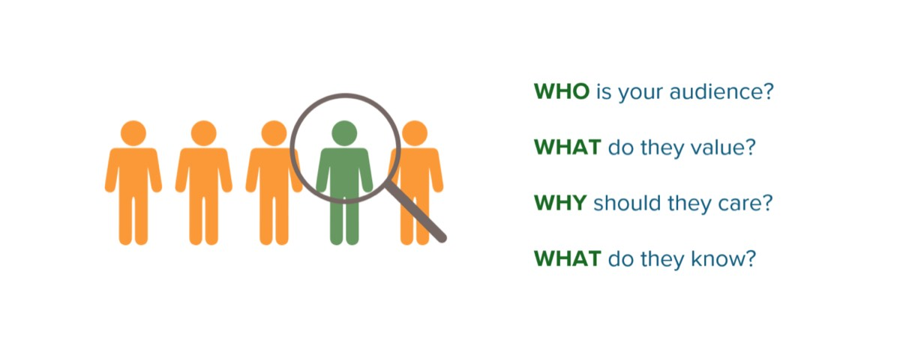
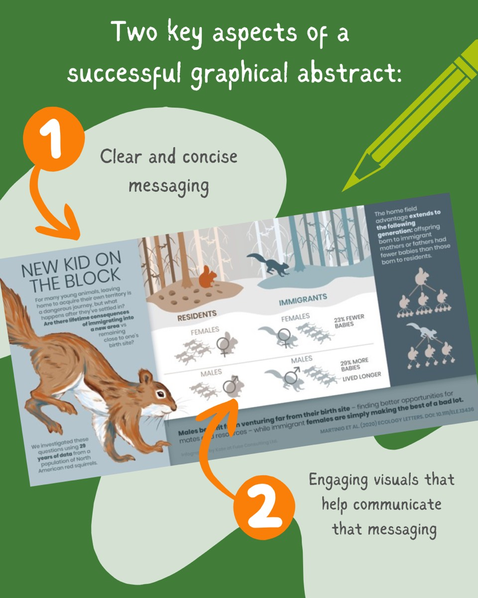

Graphical abstracts are an increasingly common tool for communicating research – so what is a graphical abstract, anyway? There are few (if any) hard rules on what makes up a graphical abstract, but like a traditional written abstract, it functions as a short summary of a paper. Many scientific journals now ask (or even require) that authors provide one for accepted articles, which if you’re a researcher, is probably what prompted you to make your very first one.
For many folks, this is where the value of the graphical abstract begins and ends – just one more box to check on the path to publication. However, I’d argue this is the least important role for the graphical abstract, which can achieve so much more when freed from the journal webpage. After all, anyone encountering your graphical abstract there 1) already knew how to find your paper, and 2) can probably get what they need by reading the article itself.

If designed thoughtfully, a graphical abstract can appeal to audiences beyond those served by your written abstract, making your research accessible to non-experts.
Its compact format also makes it especially versatile, with many possible uses:
Promoting your research on social media
Sharing updates with research partners. One client of ours has even printed graphical abstracts as postcards to send as thank-you notes to funders!
Adding to slide decks (need a quick one-slide summary of a study? Just pop in your graphical abstract)
Enhancing reports, posters, etc.
I recommend designing your graphical abstract with this versatility in mind, rather than focusing only on whatever criteria the journal outlines (which is sometimes less than helpful). Here is what I consider essential for an effective graphical abstract:
It should prioritize visuals
It should be stand-alone
It should use language accessible to non-experts
It should point readers where to learn more

While professional graphic design or custom illustrations can add that “wow” factor and make a strong impression, you can still make an effective graphical abstract with minimal design skills. What’s most important is having clear, concise messaging and leveraging visuals to communicate those messages (even if those visuals are just simple clipart).
Still feel like your research team could use some help? We’ve hosted interactive graphical abstract workshops with research groups across Canada, covering strategies for honing your key messages and translating them into simple but helpful visuals. If this sounds like it could be right for your team, please get in touch!